SIDA: Seaweed Insect Detection and Analysis
ระบบวิเคราะห์จุดสนใจของโมเดลสำหรับการตรวจจับแมลงด้วย Grad-CAM & XAI (Week 1)
YOLOv8-nano vs YOLO11-nano
จากการทดสอบโมเดลสำเร็จรูป (Pre-trained Models) ทั้งสองรุ่นของ Ultralytics มีการเปลี่ยนแปลงโครงสร้างที่สำคัญส่งผลต่อการตีความข้อมูลและระดับความแม่นยำ ดังนี้:
| คุณลักษณะ | YOLOv8-nano (yolov8n) | YOLO11-nano (yolo11n) |
|---|---|---|
| โครงสร้างหลัก (Backbone/Neck) | ใช้บล็อก C2f (Cross Stage Partial Bottleneck) ในการประมวลผล | เปลี่ยนมาใช้บล็อก C3k2 ซึ่งมีน้ำหนักเบาและไหลลื่นดีกว่าเดิม |
| กลไกความสนใจ (Attention Mechanism) | ไม่มีกลไกความสนใจติดตั้งเป็นโครงสร้างมาตรฐาน | เพิ่มโมดูล C2PSA (Channel-to-Pixel Spatial Attention) ช่วยวิเคราะห์ความสัมพันธ์พิกเซลระยะไกลแบบ Self-Attention |
| จำนวนพารามิเตอร์ | ~3.2 ล้านพารามิเตอร์ | ~2.6 ล้านพารามิเตอร์ (ขนาดเล็กลงประมาณ 18%) |
| ความแม่นยำบน COCO Dataset | ค่ามาตรฐาน YOLOv8 | mAP สูงขึ้นประมาณ 1-3% เมื่อเทียบกับ YOLOv8 ในสเกลเดียวกัน |
| การสะท้อนผลลัพธ์ผ่าน CAM | สัญญาณความสนใจกระจายตัวรอบวัตถุตามบล็อก CNN ทั่วไป | สัญญาณบีบรัดเข้าสู่สัณฐานขอบเขตวัตถุได้เรียบร้อยและกว้างกว่าจากความสามารถของ C2PSA |
อัลกอริทึม Class Activation Mapping (CAM) ทั้ง 4 รูปแบบ
ดึงค่าเกรเดียนต์ (Gradients) คลาสเป้าหมายย้อนกลับมาหาฟีเจอร์แมปเลเยอร์สุดท้ายเพื่อเฉลี่ยความเด่น
พัฒนาขึ้นโดยใส่เกรเดียนต์อันดับสอง ช่วยให้ส่องแผนภาพความร้อนครอบคลุมวัตถุประเภทเดียวกันได้ครบถ้วนขึ้น
ใช้วิธีวิเคราะห์องค์ประกอบหลัก (PCA) บนฟีเจอร์แมปโดยไม่ต้องคำนวณเกรเดียนต์ ทำงานเร็วและรูปทรงสวย
ใช้น้ำหนักเกรเดียนต์ค่าบวกคูณเข้าฟีเจอร์แมปพิกเซลต่อพิกเซล ให้พิกัดจุดความร้อนคมชัดที่สุดในทุกเลเยอร์
การประยุกต์ใช้กับโครงการ SIDA (ตรวจจับแมลงในสาหร่าย)
ในขณะที่การรันวิเคราะห์นี้ใช้โมเดลสำเร็จรูป (Pre-trained) ในการหาวัตถุทั่วไป 80 อย่าง (หมา, แมว, คน ฯลฯ) ในโครงการ SIDA โครงการนี้จะต้องดำเนินการ จูนปรับปรุงโมเดลเฉพาะทาง (Fine-tuning / Transfer Learning):
- ถ่ายรูปภาพแมลงแต่ละสายพันธุ์ที่อยู่บนสาหร่าย และวาดกล่องข้อความกำกับ (Label) เพื่อสร้าง Dataset
- นำโครงสร้างของ YOLO11-nano (ซึ่งมีโมดูล Attention C2PSA คอยคุมพิกเซล) มาทำการเทรนซ้ำเพื่อให้ตรวจจับแมลงได้เฉพาะจุด
- ใช้ Layer-CAM หรือ Grad-CAM++ มารันตรวจสอบหลังเทรนเสร็จ เพื่อทดสอบความถูกต้องว่าโมเดลตรวจจับแมลงหลายๆ ตัวในภาพพร้อมกันได้ครบ และเพ่งเล็งจุดสนใจหลักไปที่ "ตัวแมลง" จริงๆ ไม่ใช่เรื่องของเฉดสีสาหร่าย
รูปภาพต้นฉบับ (Original Image)
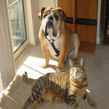
ผลลัพธ์แผนภาพความร้อนแบบมาตรฐาน (All Classes Target)
รันแบบระบุคลาสทั้งหมด (All Classes) เพื่อเปรียบเทียบดูว่าโมเดล YOLOv8n และ YOLO11n จัดสรรระดับความสำคัญให้แก่สุนัขและแมวในภาพอย่างไรผ่าน 4 วิธีการ
เปรียบเทียบการสร้างความร้อนปื้นใหญ่บนจุดเด่นของวัตถุ
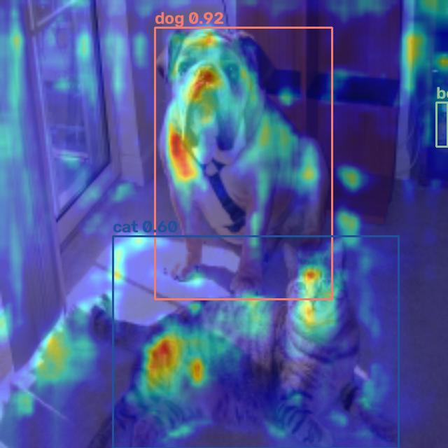
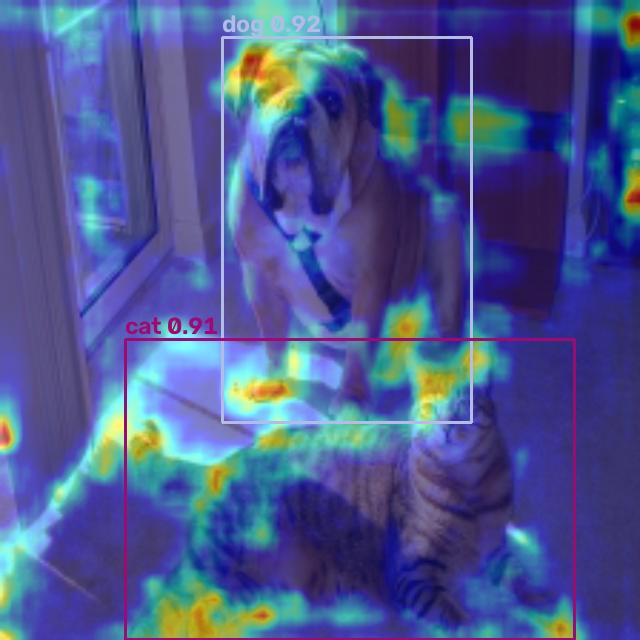
เน้นพื้นที่สำคัญของวัตถุประเภทเดียวกันให้ครบถ้วนขึ้น
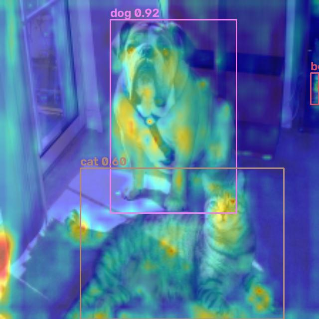
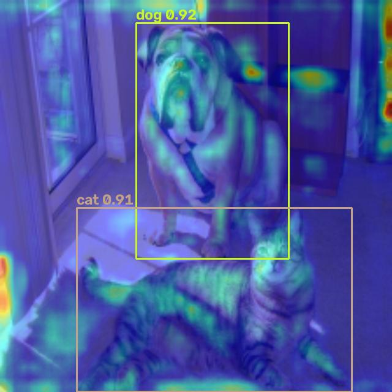
แสดงรูปร่างวัตถุเด่นโดยไม่ใช้เกรเดียนต์ รันเร็วและแม่นยำตามขอบ
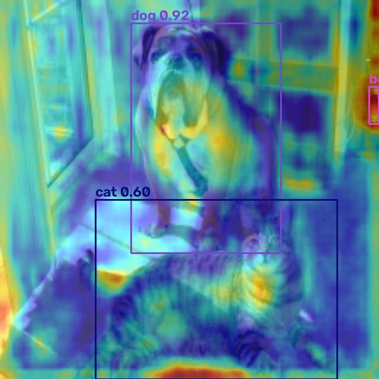
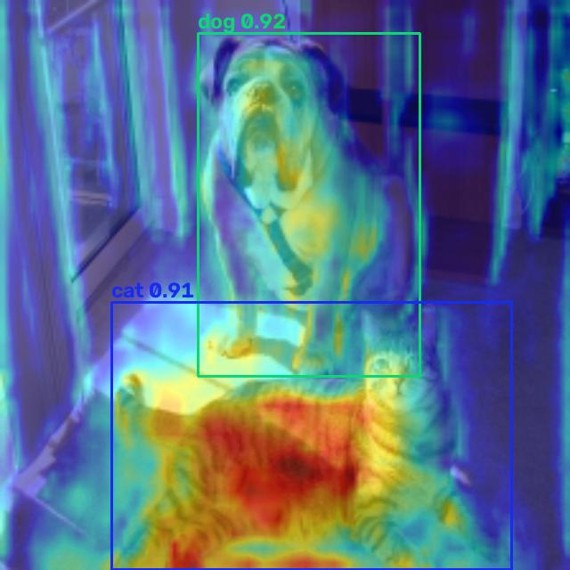
แสดงพื้นที่เปิดใช้งานแบบจุดคมชัดสูง ไม่ขยายเบลอเป็นวงกว้าง
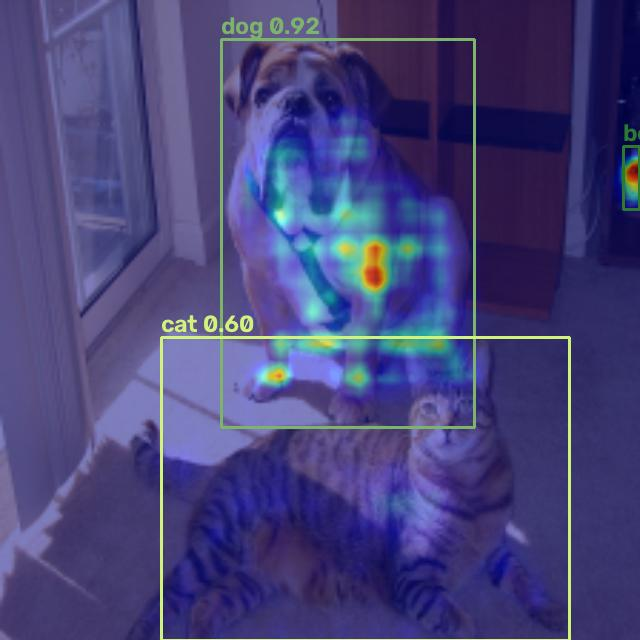
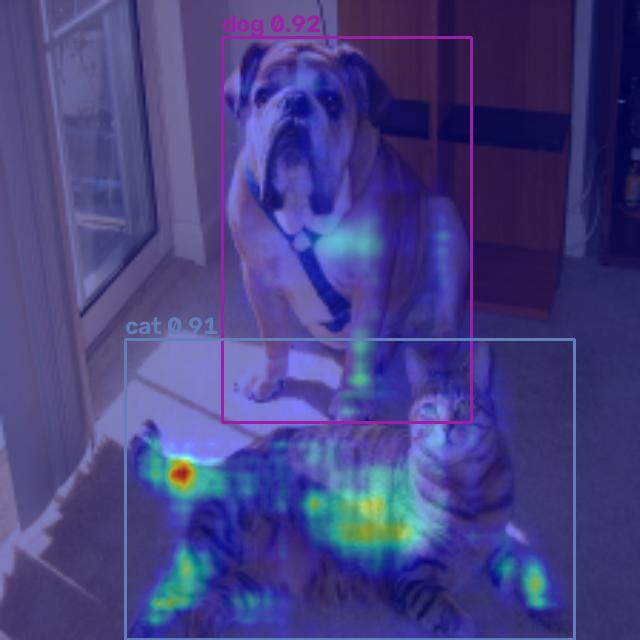
การทดสอบ: ตรวจสอบเฉพาะคลาส "สุนัข" (Dog-Only Class Specificity)
วัตถุประสงค์เพื่อดึงจุดอ่อนของ Eigen-CAM: เราส่งค่าเกรเดียนต์กลับเพื่อบอกระบบว่า "สนใจวิเคราะห์เฉพาะคลาสสุนัข" เท่านั้น ผลลัพธ์แสดงให้เห็นว่า:
- ตระกูลที่ใช้เกรเดียนต์ (Grad-CAM, Grad-CAM++, Layer-CAM): จะส่องความร้อนเฉพาะสุนัขทางซ้ายเท่านั้น ส่วนแมวทางขวาจะมืดสนิท (ถูกต้องตามหลักการวิเคราะห์แยกประเภท)
- Eigen-CAM (จุดอ่อน): เนื่องจากไม่มีการระบุข้อมูลคลาสผ่านเกรเดียนต์ มันจึงยังคงส่องความร้อนสีส้มแดงไปที่ตัวแมวอยู่ดีเพราะแมวถือเป็นฟีเจอร์ที่เด่นในเลเยอร์นั้น
ผลลัพธ์แผนภาพความร้อนคลาสสุนัขเท่านั้น (Dog-Only Target)
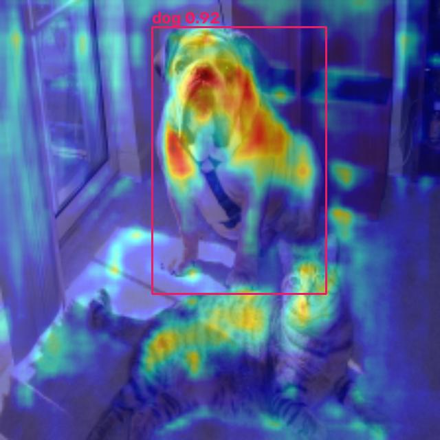
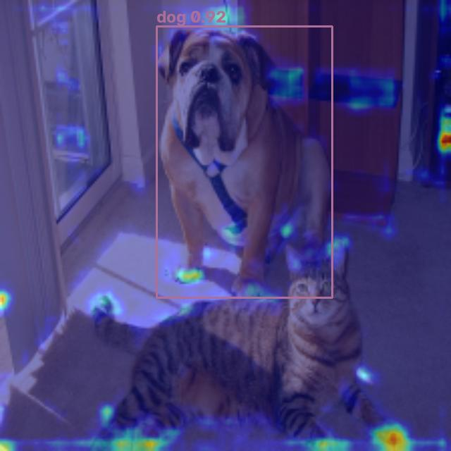
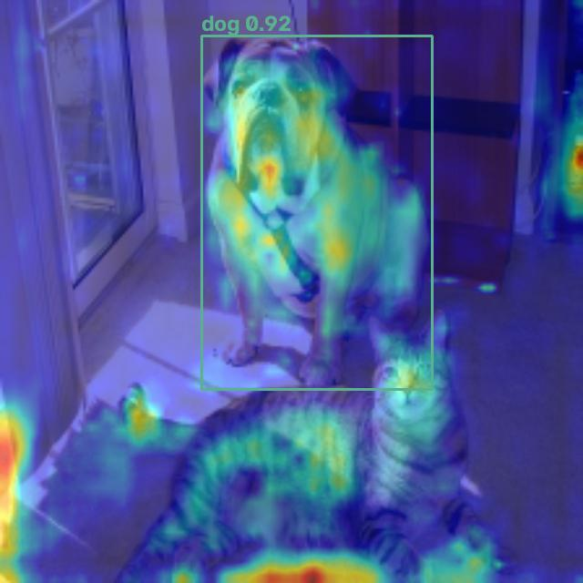
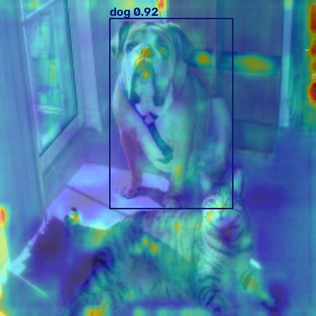
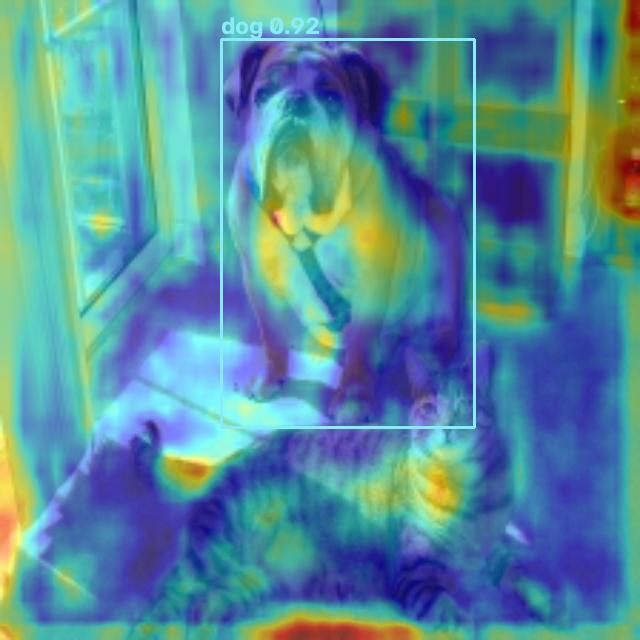
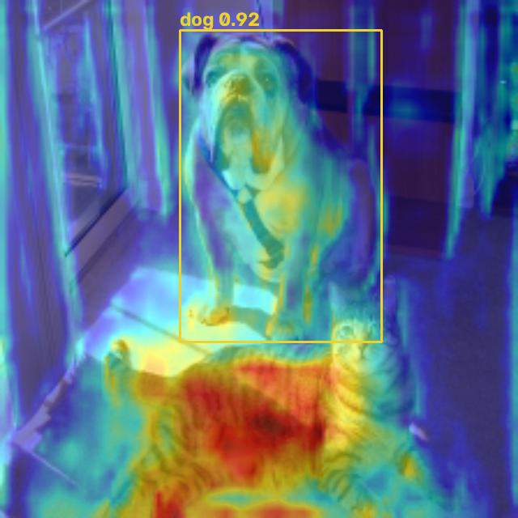
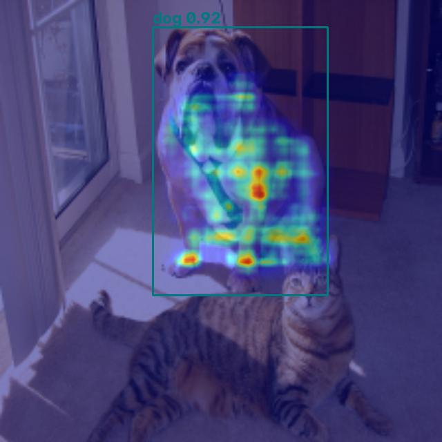
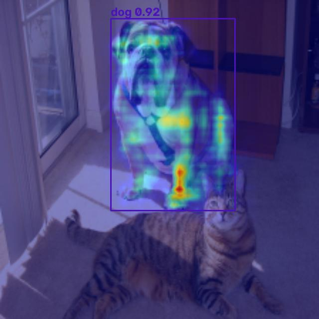
รูปภาพต้นฉบับสำหรับการทดสอบหลายวัตถุ (Multi-Object Original Image)

การทดสอบ: ตรวจสอบหลายวัตถุ (Multi-Object Detection)
วัตถุประสงค์เพื่อดึงจุดอ่อนของ Grad-CAM ดั้งเดิม: ภาพนี้มีผู้คนเดินเท้าหลายคนอยู่ด้วยกัน:
- Grad-CAM ดั้งเดิม (จุดอ่อน): วงความร้อนจะไปส่องเข้มสะท้อนอยู่แค่ตรงผู้ชายคนขวาหรือคนซ้ายสุดคนเดียว ไม่กระจายตัวคลุมคนทุกคนเนื่องจากตัวเฉลี่ย GAP
- Grad-CAM++, Eigen-CAM, Layer-CAM (จุดเด่น): จุดสว่างสีส้มแดงกระจายตัวแผ่คลุมไปที่ผู้คนทุกคนและตัวถังรถบัสได้อย่างสอดคล้อง
ผลลัพธ์แผนภาพความร้อนแบบหลายวัตถุ (Multi-Object Heatmaps)
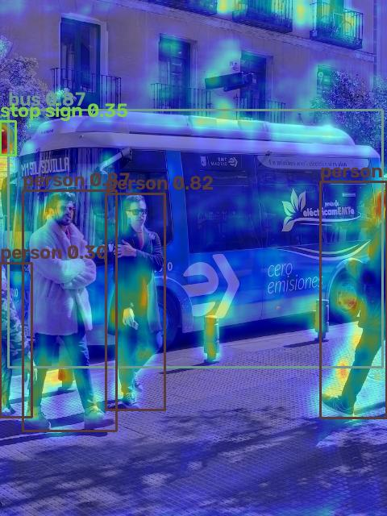
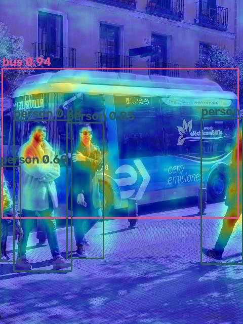
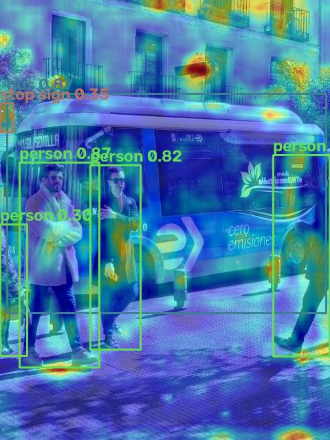
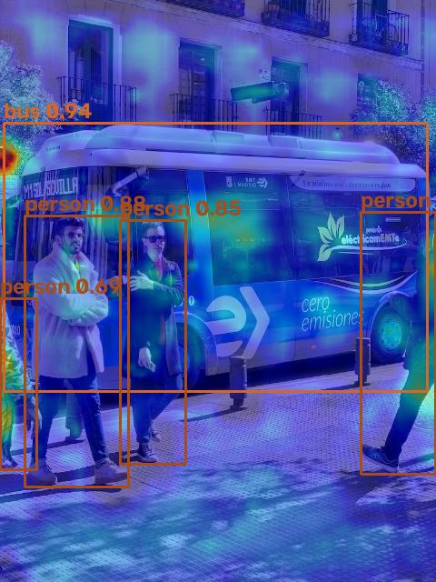
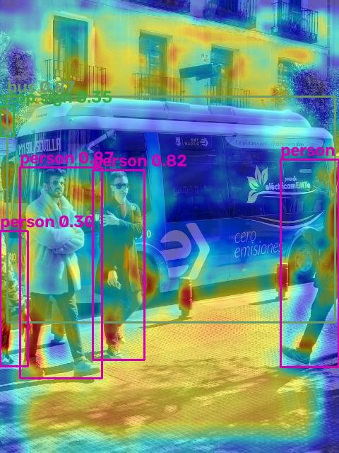
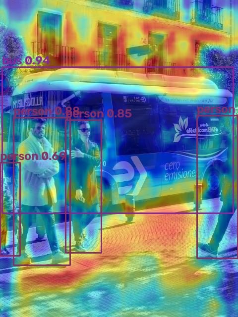
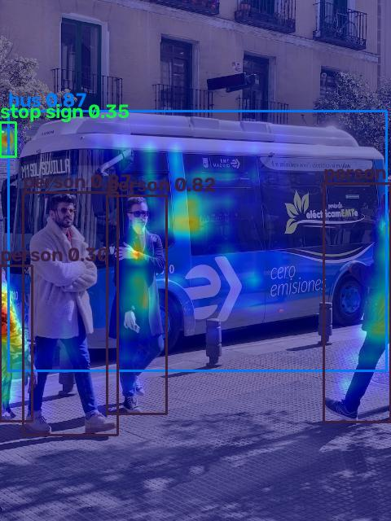
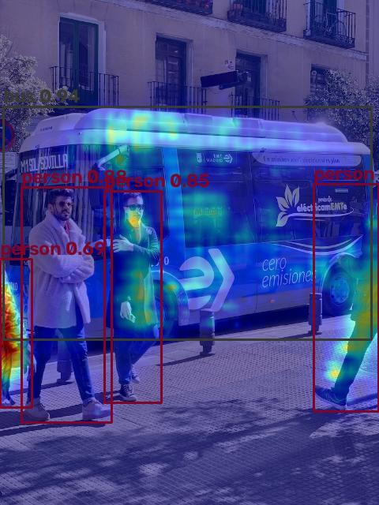